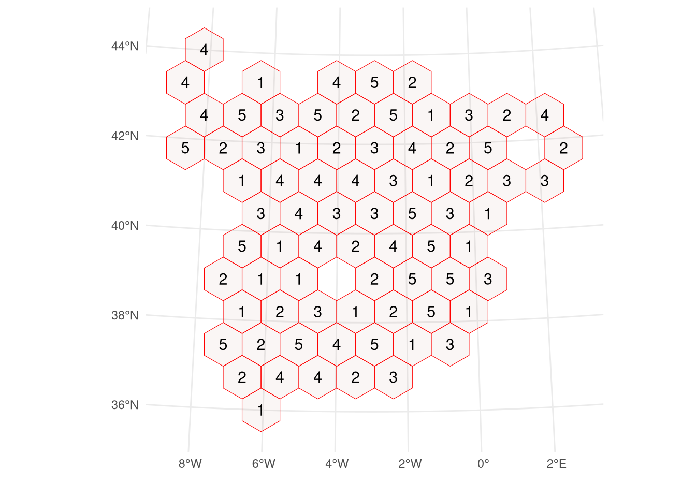
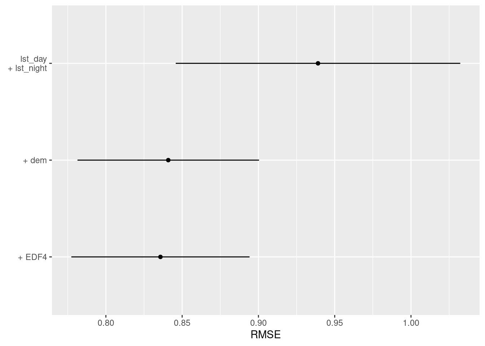

# install.packages("caret")
# install.packages("CAST")
# install.packages("blockCV")
# install.packages("sf")
# install.packages("terra")Spatial machine learning with caret
rstats
sml
Jan Linnenbrink ![]()
This is the second part of a blog post series on spatial machine learning with R.
You can find the list of other blog posts in this series in part one.
Introduction
This document shows the application of caret for spatial modelling at the example of predicting air temperature in Spain. Hereby, we use measurements of air temperature available only at specific locations in Spain to create a spatially continuous map of air temperature. Therefore, machine-learning models are trained to learn the relationship between spatially continuous predictors and air temperature.
When using machine-learning methods with spatial data, we need to take care of, e.g., spatial autocorrelation, as well as extrapolation when predicting to regions that are far away from the training data. To deal with these issues, several methods have been developed. In this document, we will show how to combine the machine-learning workflow of caret with packages designed to deal with machine-learning with spatial data. Hereby, we use blockCV::cv_spatial() and CAST::knndm() for spatial cross-validation, and CAST::aoa() to mask areas of extrapolation. We use sf and terra for processing vector and raster data, respectively.
The caret package
The caret package contains functions to train machine-learning models, as well as for, e.g., model selection. Its main function is caret::train(), which provides a uniform interface to over 200 machine-learning algorithms. (User-specified-) Cross-Validation methods can be defined via caret::trainControl(). An extensive online tutorial is available at https://topepo.github.io/caret/. Furthermore, a paper (https://doi.org/10.18637/jss.v028.i05), as well as a book (http://appliedpredictivemodeling.com/), describing the use of caret are available.
Install and load required R-packages
library(caret)
library(CAST)
library(blockCV)
library(sf)
library(terra)Case study data
Load data needed in this modelling example:
- predictor stack: raster dataset of the environmental predictors used to predict air temperature
- train points: vector dataset of ground measurements of air temperature
- spain: region for which predictions are made
predictor_stack <- terra::rast(
"https://github.com/LOEK-RS/FOSSGIS2025-examples/raw/refs/heads/main/data/predictors.tif"
)
predictor_names <- names(predictor_stack)
spain <- sf::st_read(
"https://github.com/LOEK-RS/FOSSGIS2025-examples/raw/refs/heads/main/data/spain.gpkg"
)Reading layer `spain' from data source
`https://github.com/LOEK-RS/FOSSGIS2025-examples/raw/refs/heads/main/data/spain.gpkg'
using driver `GPKG'
Simple feature collection with 1 feature and 0 fields
Geometry type: MULTIPOLYGON
Dimension: XY
Bounding box: xmin: -13454.15 ymin: 3988025 xmax: 1020771 ymax: 4859816
Projected CRS: ED50 / UTM zone 30Ntrain_points <- sf::st_read(
"https://github.com/LOEK-RS/FOSSGIS2025-examples/raw/refs/heads/main/data/temp_train.gpkg"
)Reading layer `temp_train' from data source
`https://github.com/LOEK-RS/FOSSGIS2025-examples/raw/refs/heads/main/data/temp_train.gpkg'
using driver `GPKG'
Simple feature collection with 195 features and 1 field
Geometry type: POINT
Dimension: XY
Bounding box: xmin: 36026.79 ymin: 3988818 xmax: 978160.6 ymax: 4858999
Projected CRS: ED50 / UTM zone 30Ntrain_data <- terra::extract(
predictor_stack,
train_points,
bind = TRUE,
ID = FALSE
) |>
sf::st_as_sf()
plot(sf::st_geometry(spain))
plot(sf::st_geometry(train_points), col = "blue4", add = TRUE)Standard modelling workflow
Firstly, a simple modelling workflow without feature selection and hyperparameter tuning is shown:
- split data into training and test data
- train model using the training data only
- predict on test data to obtain error metrics
- predict on predictor stack to obtain spatially continuous prediction of air temperature
Note
Geometry column needs to be dropped before using caret::train().
# 1. train-test split
set.seed(321)
trainIndex <- caret::createDataPartition(
train_data$temp,
p = .8,
list = FALSE,
times = 1
)
temperature_train <- train_data[trainIndex, ]
temperature_test <- train_data[-trainIndex, ]
# 2. model training
model <- caret::train(
temp ~ .,
data = sf::st_drop_geometry(temperature_train),
method = "ranger",
tuneGrid = expand.grid(
"mtry" = 4,
"splitrule" = "variance",
"min.node.size" = 5
),
num.trees = 100
)
# 3. predict on test data
test_df <- temperature_test[, "temp", drop = FALSE]
test_df$prediction <- predict(model, temperature_test)
test_metrics <- caret::postResample(
pred = test_df$prediction,
obs = test_df$temp
) |>
round(3) |>
t() |>
as.data.frame()
print(test_metrics) RMSE Rsquared MAE
1 0.913 0.901 0.741# 4. predict to raster stack
prediction_spatial <- terra::predict(predictor_stack, model, na.rm = TRUE)Spatial Cross-Validation for model selection
Cross-validation (CV) methods are often employed to obtain optimal hyperparameter values. Therefore, the training data are split into \(k\) folds, and a model is trained on \(k\)-1 folds. The fold not used for model training is then used to obtain the test statistic. This is repeated over all folds, and the test metric is averaged over the \(k\) folds.
In spatial machine-learning, a spatial CV is often needed to prevent very similar data to be in the training and testing fold at the same time, which is often the case if training data are clustered and leads to overly optimistic CV error estimates. R packages that implement spatial CV include, e.g., blockCV and CAST. Here, we will explore the integration of those two with caret.
Hyperparameter tuning using spatial block cross-validation
The blockCV package implements different blocking methods for spatial CV. The resulting object of the main function blockCV::cv_spatial() contains a nested list of the \(k\) folds and the training data rows that belong to each fold, as well as a list of the test data left out in each of the \(k\) iteration. These lists can be obtained using lapply() and then be used as an input to the caret::trainControl() function of caret that defines the CV strategy used in caret::train(). The grid of hyperparameter values tested during CV is defined using the tune_grid argument in caret::train(). Here, we test mtry values from 2 to 12 and min.node.size values between 5 and 15. The combination of mtry and min.node.size that minimizes the RMSE is then automatically used to re-train a final model with the complete training data set.
set.seed(333)
spatial_blocks <- blockCV::cv_spatial(
temperature_train,
k = 5,
progress = FALSE
)
train test
1 126 33
2 126 33
3 128 31
4 128 31
5 128 31
train_ids <- lapply(spatial_blocks$folds_list, function(x) x[[1]])
test_ids <- lapply(spatial_blocks$folds_list, function(x) x[[2]])
tr_control_block <- caret::trainControl(
method = "cv",
index = train_ids,
indexOut = test_ids,
savePredictions = TRUE
)
hyperparameter_grid <- expand.grid(
"mtry" = c(2, 4, 6, 10, 12),
"min.node.size" = c(5, 10, 15),
"splitrule" = "variance"
)
model_spatial <- caret::train(
temp ~ .,
data = sf::st_drop_geometry(temperature_train),
method = "ranger",
trControl = tr_control_block,
tuneGrid = hyperparameter_grid,
num.trees = 100
)
model_spatial$finalModelRanger result
Call:
ranger::ranger(dependent.variable.name = ".outcome", data = x, mtry = min(param$mtry, ncol(x)), min.node.size = param$min.node.size, splitrule = as.character(param$splitrule), write.forest = TRUE, probability = classProbs, ...)
Type: Regression
Number of trees: 100
Sample size: 159
Number of independent variables: 22
Mtry: 10
Target node size: 5
Variable importance mode: none
Splitrule: variance
OOB prediction error (MSE): 0.8557959
R squared (OOB): 0.8952759 Hyperparameter tuning using target-oriented CV
Another spatial CV method is kNNDM, which is implemented in the CAST package and aims at emulating the prediction situation encountered by the model during CV. In this case, the prediction situation is to predict from the temperature measurement stations to the whole area of Spain. Since the temperature measurement stations are rather randomly distributed over the area of Spain, no spatial blocking is needed and kNNDM randomly assigns training points to CV folds. The output of kNNDM contains a list of row indices of training data points that are used in each CV-iteration (indx_train), as well as of indices that are left out in each iteration (indx_test). These lists can easily be used as input to the caret::trainControl() function of caret that defines the CV used in caret::train().
knndm_folds <- CAST::knndm(
tpoints = temperature_train,
modeldomain = spain,
space = "geographical",
clustering = "kmeans",
k = 5
)
tr_control_knndm <- caret::trainControl(
method = "cv",
index = knndm_folds$indx_train,
indexOut = knndm_folds$indx_test,
savePredictions = TRUE
)
hyperparameter_grid <- expand.grid(
"mtry" = c(2, 4, 6, 10, 12),
"min.node.size" = c(5, 10, 15),
"splitrule" = "variance"
)
model_knndm <- caret::train(
temp ~ .,
data = sf::st_drop_geometry(temperature_train),
method = "ranger",
trControl = tr_control_knndm,
tuneGrid = hyperparameter_grid,
num.trees = 100
)
model_knndm$finalModelRanger result
Call:
ranger::ranger(dependent.variable.name = ".outcome", data = x, mtry = min(param$mtry, ncol(x)), min.node.size = param$min.node.size, splitrule = as.character(param$splitrule), write.forest = TRUE, probability = classProbs, ...)
Type: Regression
Number of trees: 100
Sample size: 159
Number of independent variables: 22
Mtry: 12
Target node size: 10
Variable importance mode: none
Splitrule: variance
OOB prediction error (MSE): 0.8728343
R squared (OOB): 0.8931909 Feature selection using target-oriented CV
To reduce the number of environmental predictors, and thus enhance the generalizability of the model, feature selection is commonly applied in machine-learning workflows. CAST implements Forward-Feature-Selection, that can be used with spatial CV. Here, we use the results of the hyperparameter tuning above and kNNDM CV to select the most relevant features. Plotting the results of FFS() shows that the variables DEM, Y, EDF5 and primaryroads were selected.
selected_hyperparams <- model_knndm$bestTune
model_ffs <- CAST::ffs(
predictors = sf::st_drop_geometry(temperature_train)[, predictor_names],
response = sf::st_drop_geometry(temperature_train)$temp,
method = "ranger",
num.trees = 100,
trControl = tr_control_knndm,
tuneGrid = selected_hyperparams,
verbose = FALSE
)
plot(model_ffs, plotType = "selected")
# obtain prediction
prediction_ffs <- terra::predict(predictor_stack, model_ffs, na.rm = TRUE)AOA
Lastly, the area which is too dissimilar from the training data for the models to make reliable predictions (area of applicability, AOA) is delineated using the function CAST::aoa(). The function CAST::aoa() takes as inputs the predictor stack, as well as the trained caret model. The resulting object contains the dissimilarity values, the threshold used to delineate the AOA (every dissimilarity value above this threshold is considered outside the AOA), as well as the final AOA raster. Since our training data are randomly distributed in the study area, most of the area falls within the AOA.
AOA_without_tuning <- CAST::aoa(
newdata = predictor_stack,
model = model,
verbose = FALSE
)
AOA_with_tuning <- CAST::aoa(
newdata = predictor_stack,
model = model_ffs,
verbose = FALSE
)Compare predictions obtained by the un-tuned model vs the tuned model
par(mfrow = c(2, 2))
plot(prediction_spatial, main = "prediction without tuning")
plot(AOA_without_tuning$AOA, main = "AOA without tuning")
plot(prediction_ffs, main = "prediction with model selection")
plot(AOA_with_tuning$AOA, main = "AOA with model selection")
Conclusion
caret has no functions that explicitly deal with spatial data. However, due to its rather flexible design, caret is compatible with several packages designed for spatial machine-learning. The caret::trainControl() takes a list of CV indices as input, which makes it quite flexible to work with the output of e.g. CAST::knndm() and blockCV::cv_spatial(). Furthermore, caret is easy to use due to its functional programming paradigm. The documentation is extensive, and it’s rather easy to find modelling algorithms and their hyperparameters. Lastly, it should be noted that caret is not actively developed, since its main developer moved to tidymodels.
This blog post was originally written as a supplement to the poster “An Inventory of Spatial Machine Learning Packages in R†presented at the FOSSGIS 2025 conference in Muenster, Germany. The poster is available at https://doi.org/10.5281/zenodo.15088973.
Reuse
Citation
BibTeX citation:
@online{linnenbrink2025,
author = {Linnenbrink, Jan},
title = {Spatial Machine Learning with Caret},
date = {2025-05-14},
url = {https://geocompx.org/post/2025/sml-bp2/},
langid = {en}
}
For attribution, please cite this work as:
Linnenbrink, Jan. 2025. “Spatial Machine Learning with
Caret.†May 14, 2025. https://geocompx.org/post/2025/sml-bp2/.